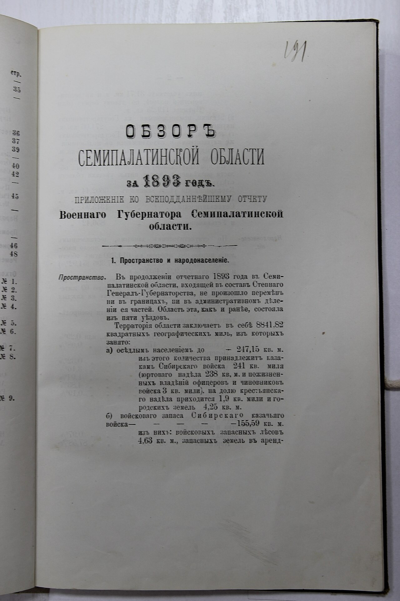

Госархив ВКО
Открыто сегодня 9–18
Откройте документы края онлайн
Коллекция

Ф. 1-П, оп. 1, д. 245Обзор Семипалатинской области за 1893 годФ. 14-Ф, оп. 1, д. 28Базар в Семипалатинске, 1885 Ф. 1-П, оп. 2, д. 18Герб Семипалатинска, утверждён 23.11.1851
Ф. 1-П, оп. 2, д. 18Герб Семипалатинска, утверждён 23.11.1851 Ф. 14-Ф, оп. 1, д. 52Усть-Каменогорск, гравюра 1891
Ф. 14-Ф, оп. 1, д. 52Усть-Каменогорск, гравюра 1891


Спросить